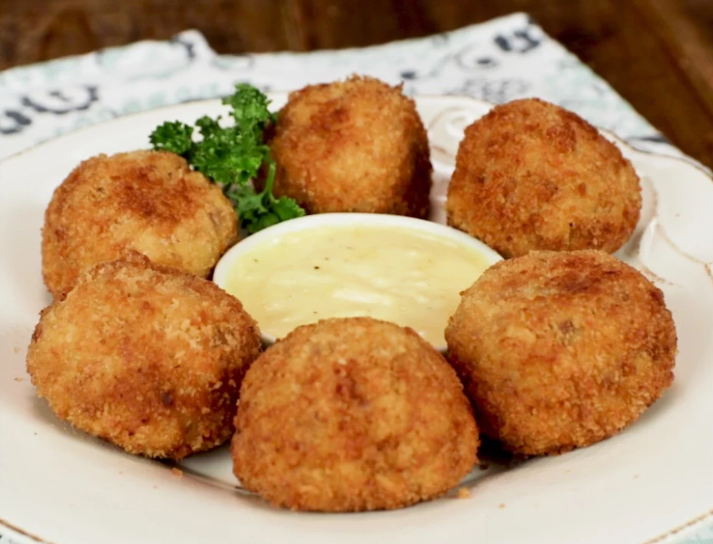

Home
Cordon Bleu Balls

Description
Cordon Bleu Balls are a bite-sized twist on the classic Chicken Cordon Bleu. These crispy, golden balls are filled with ham and cheese, coated in breadcrumbs, and deep-fried or baked to perfection. They are perfect as an appetizer or snack, served with a dipping sauce.
Ingredients:
- 2 large chicken breasts, finely chopped or ground
- ½ teaspoon salt
- ½ teaspoon black pepper
- ½ teaspoon garlic powder
- ½ teaspoon onion powder
- 1 tablespoon all-purpose flour
- 1 egg
- 100g ham, cut into small cubes
- 100g cheese (cheddar or mozzarella), cut into small cubes
- Oil for deep frying (For Frying)
For Breading:
- ½ cup all-purpose flour
- 1 egg, beaten
- 1 cup breadcrumbs
Steps:
- Prepare the chicken mixture - In a bowl, mix the ground chicken with salt, pepper, garlic powder, onion powder, flour, and egg until well combined.
- Form the balls - Take a small amount of chicken mixture, flatten it in your palm, and place a cube of ham and cheese in the center. Shape it into a ball, making sure the filling is fully covered.
- Coat the balls - Roll each ball in flour, dip in beaten egg, then coat with breadcrumbs. Repeat for extra crispiness if desired.
- Heat oil in a pan and deep-fry the balls until golden brown. Drain on paper towels.
- Serve - Enjoy warm with a dip like honey mustard, garlic mayo, or cheese sauce!